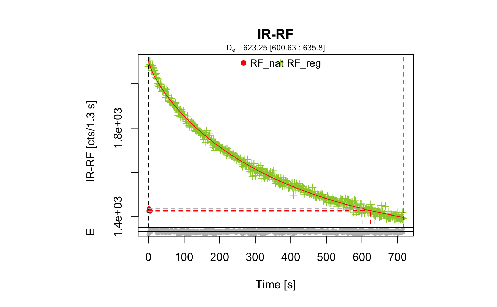
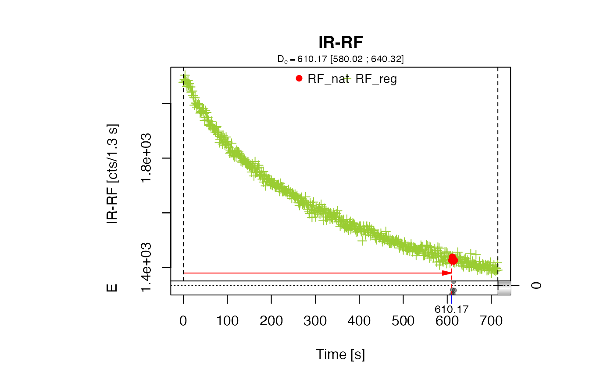

Function to analyse IRSAR RF measurements on K-feldspar samples, performed using the protocol according to Erfurt et al. (2003) and beyond.
analyse_IRSAR.RF( object, sequence_structure = c("NATURAL", "REGENERATED"), RF_nat.lim = NULL, RF_reg.lim = NULL, method = "FIT", method.control = NULL, test_parameters = NULL, n.MC = 10, txtProgressBar = TRUE, plot = TRUE, plot_reduced = FALSE, ... )
| object | RLum.Analysis or a list of RLum.Analysis-objects (required):
input object containing data for protocol analysis. The function expects to
find at least two curves in the RLum.Analysis object: (1) |
|---|---|
| sequence_structure | vector character (with default):
specifies the general sequence structure. Allowed steps are |
| RF_nat.lim | vector (with default): set minimum and maximum channel range for natural signal fitting and sliding. If only one value is provided this will be treated as minimum value and the maximum limit will be added automatically. |
| RF_reg.lim | vector (with default): set minimum and maximum channel range for regenerated signal fitting and sliding. If only one value is provided this will be treated as minimum value and the maximum limit will be added automatically. |
| method | character (with default):
setting method applied for the data analysis.
Possible options are |
| method.control | list (optional):
parameters to control the method, that can be passed to the chosen method.
These are for (1) |
| test_parameters | list (with default):
set test parameters. Supported parameters are: (see Details for further information) |
| n.MC | numeric (with default):
set number of Monte Carlo runs for start parameter estimation ( |
| txtProgressBar | logical (with default):
enables |
| plot | logical (with default):
plot output ( |
| plot_reduced | logical (optional):
provides a reduced plot output if enabled to allow common R plot combinations,
e.g., |
| ... | further arguments that will be passed to the plot output.
Currently supported arguments are |
The function returns numerical output and an (optional) plot.
-----------------------------------
[ NUMERICAL OUTPUT ]
-----------------------------------
RLum.Results-object
slot: @data
[.. $data : data.frame]
| Column | Type | Description |
DE | numeric | the obtained equivalent dose |
DE.ERROR | numeric | (only method = "SLIDE") standard deviation obtained from MC runs |
DE.LOWER | numeric | 2.5% quantile for De values obtained by MC runs |
DE.UPPER | numeric | 97.5% quantile for De values obtained by MC runs |
DE.STATUS | character | test parameter status |
RF_NAT.LIM | charcter | used RF_nat curve limits |
RF_REG.LIM | character | used RF_reg curve limits |
POSITION | integer | (optional) position of the curves |
DATE | character | (optional) measurement date |
SEQUENCE_NAME | character | (optional) sequence name |
UID | character | unique data set ID |
[.. $De.MC : numeric]
A numeric vector with all the De values obtained by the MC runs.
[.. $test_parameters : data.frame]
| Column | Type | Description |
POSITION | numeric | aliquot position |
PARAMETER | character | test parameter name |
THRESHOLD | numeric | set test parameter threshold value |
VALUE | numeric | the calculated test parameter value (to be compared with the threshold) |
STATUS | character | test parameter status either "OK" or "FAILED" |
SEQUENCE_NAME | character | name of the sequence, so far available |
UID | character | unique data set ID |
[.. $fit : data.frame]
An nls object produced by the fitting.
[.. $slide : list]
A list with data produced during the sliding. Some elements are previously reported with the summary object data. List elements are:
| Element | Type | Description |
De | numeric | the final De obtained with the sliding approach |
De.MC | numeric | all De values obtained by the MC runs |
residuals | numeric | the obtained residuals for each channel of the curve |
trend.fit | lm | fitting results produced by the fitting of the residuals |
RF_nat.slided | matrix | the slided RF_nat curve |
t_n.id | numeric | the index of the t_n offset |
I_n | numeric | the vertical intensity offset if a vertical slide was applied |
algorithm_error | numeric | the vertical sliding suffers from a systematic effect induced by the used algorithm. The returned value is the standard deviation of all obtained De values while expanding the vertical sliding range. I can be added as systematic error to the final De error; so far wanted. |
vslide_range | numeric | the range used for the vertical sliding |
squared_residuals | numeric | the squared residuals (horizontal sliding) |
slot: @info
The original function call (methods::language-class-object)
The output (data) should be accessed using the function get_RLum
------------------------
[ PLOT OUTPUT ]
------------------------
The slid IR-RF curves with the finally obtained De
The function performs an IRSAR analysis described for K-feldspar samples by Erfurt et al. (2003) assuming a negligible sensitivity change of the RF signal.
General Sequence Structure (according to Erfurt et al., 2003)
Measuring IR-RF intensity of the natural dose for a few seconds (\(RF_{nat}\))
Bleach the samples under solar conditions for at least 30 min without changing the geometry
Waiting for at least one hour
Regeneration of the IR-RF signal to at least the natural level (measuring (\(RF_{reg}\))
Fitting data with a stretched exponential function
Calculate the the palaeodose \(D_{e}\) using the parameters from the fitting
Actually two methods are supported to obtain the \(D_{e}\):
method = "FIT" and method = "SLIDE":
method = "FIT"
The principle is described above and follows the original suggestions by
Erfurt et al., 2003. For the fitting the mean count value of the RF_nat curve is used.
Function used for the fitting (according to Erfurt et al. (2003)):
$$\phi(D) = \phi_{0}-\Delta\phi(1-exp(-\lambda*D))^\beta$$
with \(\phi(D)\) the dose dependent IR-RF flux, \(\phi_{0}\) the initial IR-RF flux, \(\Delta\phi\) the dose dependent change of the IR-RF flux, \(\lambda\) the exponential parameter, \(D\) the dose and \(\beta\) the dispersive factor.
To obtain the palaeodose \(D_{e}\) the function is changed to:
$$D_{e} = ln(-(\phi(D) - \phi_{0})/(-\lambda*\phi)^{1/\beta}+1)/-\lambda$$
The fitting is done using the port algorithm of the nls function.
method = "SLIDE"
For this method, the natural curve is slid along the x-axis until congruence with the regenerated curve is reached. Instead of fitting this allows working with the original data without the need for any physical model. This approach was introduced for RF curves by Buylaert et al., 2012 and Lapp et al., 2012.
Here the sliding is done by searching for the minimum of the squared residuals. For the mathematical details of the implementation see Frouin et al., 2017
method.control
To keep the generic argument list as clear as possible, arguments to control the methods
for De estimation are all pre set with meaningful default parameters and can be
handled using the argument method.control only, e.g.,
method.control = list(trace = TRUE). Supported arguments are:
| ARGUMENT | METHOD | DESCRIPTION |
trace | FIT, SLIDE | as in nls; shows sum of squared residuals |
trace_vslide | SLIDE | logical argument to enable or disable the tracing of the vertical sliding |
maxiter | FIT | as in nls |
warnOnly | FIT | as in nls |
minFactor | FIT | as in nls |
correct_onset | SLIDE | The logical argument shifts the curves along the x-axis by the first channel,
as light is expected in the first channel. The default value is TRUE. |
show_density | SLIDE | logical (with default) enables or disables KDE plots for MC run results. If the distribution is too narrow nothing is shown. |
show_fit | SLIDE | logical (with default) enables or disables the plot of the fitted curve routinely obtained during the evaluation. |
n.MC | SLIDE | integer (with default):
This controls the number of MC runs within the sliding (assessing the possible minimum values).
The default n.MC = 1000. Note: This parameter is not the same as controlled by the
function argument n.MC. |
vslide_range | SLDE | logical or numeric or character (with default):
This argument sets the boundaries for a vertical curve
sliding. The argument expects a vector with an absolute minimum and a maximum (e.g., c(-1000,1000)).
Alternatively the values NULL and 'auto' are allowed. The automatic mode detects the
reasonable vertical sliding range (recommended). NULL applies no vertical sliding.
The default is NULL. |
cores | SLIDE | number or character (with default): set number of cores to be allocated
for a parallel processing of the Monte-Carlo runs. The default value is NULL (single thread),
the recommended values is 'auto'. An optional number (e.g., cores = 8) assigns a value manually. |
Error estimation
For method = "FIT" the asymmetric error range is obtained by using the 2.5 % (lower) and
the 97.5 % (upper) quantiles of the \(RF_{nat}\) curve for calculating the \(D_{e}\) error range.
For method = "SLIDE" the error is obtained by bootstrapping the residuals of the slid
curve to construct new natural curves for a Monte Carlo simulation. The error is returned in two
ways: (a) the standard deviation of the herewith obtained \(D_{e}\) from the MC runs and (b) the confidence
interval using the 2.5 % (lower) and the 97.5 % (upper) quantiles. The results of the MC runs
are returned with the function output.
Test parameters
The argument test_parameters allows to pass some thresholds for several test parameters,
which will be evaluated during the function run. If a threshold is set and it will be exceeded the
test parameter status will be set to "FAILED". Intentionally this parameter is not termed
'rejection criteria' as not all test parameters are evaluated for both methods and some parameters
are calculated by not evaluated by default. Common for all parameters are the allowed argument options
NA and NULL. If the parameter is set to NA the value is calculated but the
result will not be evaluated, means it has no effect on the status ("OK" or "FAILED")
of the parameter.
Setting the parameter to NULL disables the parameter entirely and the parameter will be
also removed from the function output. This might be useful in cases where a particular parameter
asks for long computation times. Currently supported parameters are:
curves_ratio numeric (default: 1.001):
The ratio of \(RF_{nat}\) over \(RF_{reg}\) in the range of\(RF_{nat}\) of is calculated and should not exceed the threshold value.
intersection_ratio numeric (default: NA):
Calculated as absolute difference from 1 of the ratio of the integral of the normalised RF-curves,
This value indicates intersection of the RF-curves and should be close to 0 if the curves
have a similar shape. For this calculation first the corresponding time-count pair value on the RF_reg
curve is obtained using the maximum count value of the RF_nat curve and only this segment (fitting to
the RF_nat curve) on the RF_reg curve is taken for further calculating this ratio. If nothing is
found at all, Inf is returned.
residuals_slope numeric (default: NA; only for method = "SLIDE"):
A linear function is fitted on the residuals after sliding. The corresponding slope can be used to discard values as a high (positive, negative) slope may indicate that both curves are fundamentally different and the method cannot be applied at all. Per default the value of this parameter is calculated but not evaluated.
curves_bounds numeric (default: \(max(RF_{reg_counts})\):
This measure uses the maximum time (x) value of the regenerated curve. The maximum time (x) value of the natural curve cannot be larger than this value. However, although this is not recommended the value can be changed or disabled.
dynamic_ratio numeric (default: NA):
The dynamic ratio of the regenerated curve is calculated as ratio of the minimum and maximum count values.
lambda, beta and delta.phi
numeric (default: NA; method = "SLIDE"):
The stretched exponential function suggested by Erfurt et al. (2003) describing the decay of
the RF signal, comprises several parameters that might be useful to evaluate the shape of the curves.
For method = "FIT" this parameter is obtained during the fitting, for method = "SLIDE" a
rather rough estimation is made using the function minpack.lm::nlsLM and the equation
given above. Note: As this procedure requests more computation time, setting of one of these three parameters
to NULL also prevents a calculation of the remaining two.
This function assumes that there is no sensitivity change during the measurements (natural vs. regenerated signal), which is in contrast to the findings by Buylaert et al. (2012).
0.7.8
Kreutzer, S., 2020. analyse_IRSAR.RF(): Analyse IRSAR RF measurements. Function version 0.7.8. In: Kreutzer, S., Burow, C., Dietze, M., Fuchs, M.C., Schmidt, C., Fischer, M., Friedrich, J., Riedesel, S., Autzen, M., Mittelstrass, D., 2020. Luminescence: Comprehensive Luminescence Dating Data Analysis. R package version 0.9.9. https://CRAN.R-project.org/package=Luminescence
Buylaert, J.P., Jain, M., Murray, A.S., Thomsen, K.J., Lapp, T., 2012. IR-RF dating of sand-sized K-feldspar extracts: A test of accuracy. Radiation Measurements 44 (5-6), 560-565. doi: 10.1016/j.radmeas.2012.06.021
Erfurt, G., Krbetschek, M.R., 2003. IRSAR - A single-aliquot regenerative-dose dating protocol applied to the infrared radiofluorescence (IR-RF) of coarse- grain K-feldspar. Ancient TL 21, 35-42.
Erfurt, G., 2003. Infrared luminescence of Pb+ centres in potassium-rich feldspars. physica status solidi (a) 200, 429-438.
Erfurt, G., Krbetschek, M.R., 2003. Studies on the physics of the infrared radioluminescence of potassium feldspar and on the methodology of its application to sediment dating. Radiation Measurements 37, 505-510.
Erfurt, G., Krbetschek, M.R., Bortolot, V.J., Preusser, F., 2003. A fully automated multi-spectral radioluminescence reading system for geochronometry and dosimetry. Nuclear Instruments and Methods in Physics Research Section B: Beam Interactions with Materials and Atoms 207, 487-499.
Frouin, M., Huot, S., Kreutzer, S., Lahaye, C., Lamothe, M., Philippe, A., Mercier, N., 2017. An improved radiofluorescence single-aliquot regenerative dose protocol for K-feldspars. Quaternary Geochronology 38, 13-24. doi:10.1016/j.quageo.2016.11.004
Lapp, T., Jain, M., Thomsen, K.J., Murray, A.S., Buylaert, J.P., 2012. New luminescence measurement facilities in retrospective dosimetry. Radiation Measurements 47, 803-808. doi:10.1016/j.radmeas.2012.02.006
Trautmann, T., 2000. A study of radioluminescence kinetics of natural feldspar dosimeters: experiments and simulations. Journal of Physics D: Applied Physics 33, 2304-2310.
Trautmann, T., Krbetschek, M.R., Dietrich, A., Stolz, W., 1998. Investigations of feldspar radioluminescence: potential for a new dating technique. Radiation Measurements 29, 421-425.
Trautmann, T., Krbetschek, M.R., Dietrich, A., Stolz, W., 1999. Feldspar radioluminescence: a new dating method and its physical background. Journal of Luminescence 85, 45-58.
Trautmann, T., Krbetschek, M.R., Stolz, W., 2000. A systematic study of the radioluminescence properties of single feldspar grains. Radiation Measurements 32, 685-690.
Sebastian Kreutzer, Geography & Earth Sciences, Aberystwyth University (United Kingdom) , RLum Developer Team
##load data data(ExampleData.RLum.Analysis, envir = environment()) ##(1) perform analysis using the method 'FIT' results <- analyse_IRSAR.RF(object = IRSAR.RF.Data)#> DE DE.ERROR DE.LOWER DE.UPPER DE.STATUS RF_NAT.LIM RF_REG.LIM POSITION #> 1 623.25 NA 600.63 635.8 OK 1:5 1:524 NA #> DATE SEQUENCE_NAME UID #> 1 NA NA 2020-11-29-11:10.0.18945696670562#> POSITION PARAMETER THRESHOLD VALUE STATUS SEQUENCE_NAME #> 1 NA curves_ratio 1.001 6.845685e-01 OK NA #> 2 NA intersection_ratio NA 5.541736e-03 OK NA #> 3 NA residuals_slope NA NA OK NA #> 4 NA curves_bounds 716.000 6.358000e+02 OK NA #> 5 NA dynamic_ratio NA 1.524261e+00 OK NA #> 6 NA lambda NA 2.182234e-04 OK NA #> 7 NA beta NA 5.418719e-01 OK NA #> 8 NA delta.phi NA 2.103400e+03 OK NA #> UID #> 1 2020-11-29-11:10.0.18945696670562 #> 2 2020-11-29-11:10.0.18945696670562 #> 3 2020-11-29-11:10.0.18945696670562 #> 4 2020-11-29-11:10.0.18945696670562 #> 5 2020-11-29-11:10.0.18945696670562 #> 6 2020-11-29-11:10.0.18945696670562 #> 7 2020-11-29-11:10.0.18945696670562 #> 8 2020-11-29-11:10.0.18945696670562##(2) perform analysis using the method 'SLIDE' results <- analyse_IRSAR.RF(object = IRSAR.RF.Data, method = "SLIDE", n.MC = 1)#> #> Run Monte Carlo loops for error estimation #> | | | 0% | |======================================================================| 100%#> Warning: [analyse_IRSAR.RF()] Narrow density distribution, no density distribution plotted!if (FALSE) { ##(3) perform analysis using the method 'SLIDE' and method control option ## 'trace results <- analyse_IRSAR.RF( object = IRSAR.RF.Data, method = "SLIDE", method.control = list(trace = TRUE)) }